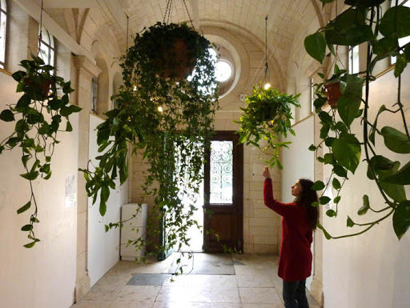

La mise en place d’un processus numérique pour questionner la relation entre formes et sons, permet donc sa complexification et son renouvellement. La place de l’usager dans l’espace, et son influence sur celui-ci, peuvent être illustrées par la création et recréation d’un environnement nouveau pour l’utilisateur, propre à lui-même. Sons, formes et environnement influencent l’utilisateur, qui les influences à son tour, un cercle vertueux est mis en place. Le collectif Scenocose explore et développe la notion d’interactivité à travers une hybridation entre technologie et éléments vivants. Pour leur installation
Akousmaflore1, ils ont composé un jardin de véritables plantes musicales, réactives aux manipulations de l’homme. Celles-ci émettent des sons au contact des caresses et effleurements du public. À l’image de cette référence, comment peut être développée graphiquement l’interaction avec le vivant et/ou l’environnement ? La recherche et les expérimentations numériques, pour moi, offrent des variantes quasi-infini d’interaction sons-formes. Quelles solutions graphiques, répondant à un besoin de communication entre sons et formes, dans un environnement défini, viendrait accentuer l’immersion de l’usager ?